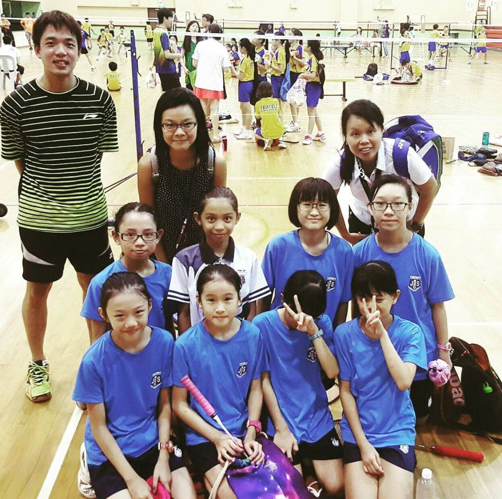

A chronological record of my decade-long competitive badminton journey and upcoming events.
The grind never stops. Training hard, staying agile, and looking forward to participating in the next big competition!
SCDF & Dell Technologies
Assembling a team to build a high-impact prototype tackling real-world challenges for Singapore’s frontline responders. The hackathon focuses on utilizing app development, AI, or hardware to enhance responder safety, increase operational efficiency, and assist in critical emergency situations.
Currently rallying the squad and prepping for the exclusive SCDF site visit and technical briefing on May 11th. Ready to gain insider insights and build purpose-driven tech that truly makes a difference!
Nanyang Technological University
Competed in the inaugural 2026 edition focusing on AI for Good and Smart Cities. Developed a comprehensive 1,000-word proposal, technical pitch deck, and a 90-second video pitch. While the project was not selected for the finals, the rigorous ideation process directly established the foundation for the EchoSync architecture.
A privacy-first, zero-stigma IoT safety system powered by cloud AI. By cross-referencing thermal and acoustic signatures, it proactively detects elderly falls and health emergencies in real-time without relying on wearables or invasive optical cameras.
Institute of Technical Education
Represented ITE at the highest level of inter-school badminton. Dedicated years of intensive training and team coordination, resulting in consecutive podium finishes and establishing a strong athletic legacy at the institute.
Guangyang Secondary School
Actively participated and competed in the National School Games (NSG) across both 'C' and 'B' Divisions in the highly competitive South Zone, building a strong foundation in athletic endurance and competitive mindset.

Jing Shan Primary School
Where the journey began. Selected to represent the primary school in the National School Games B Division, igniting a life-long passion for competitive sports and teamwork.